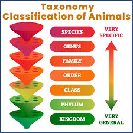
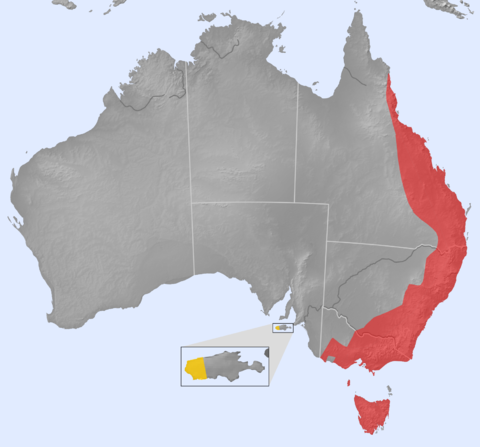
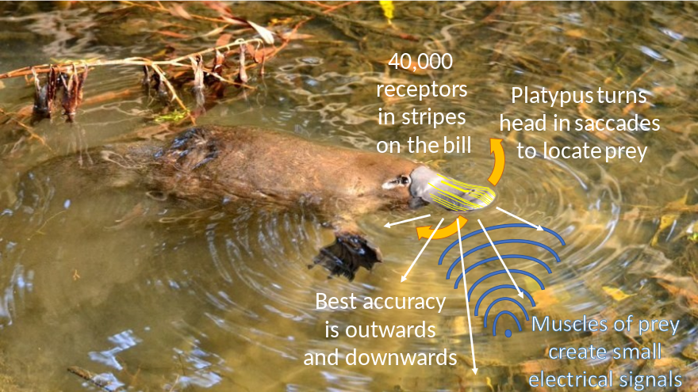
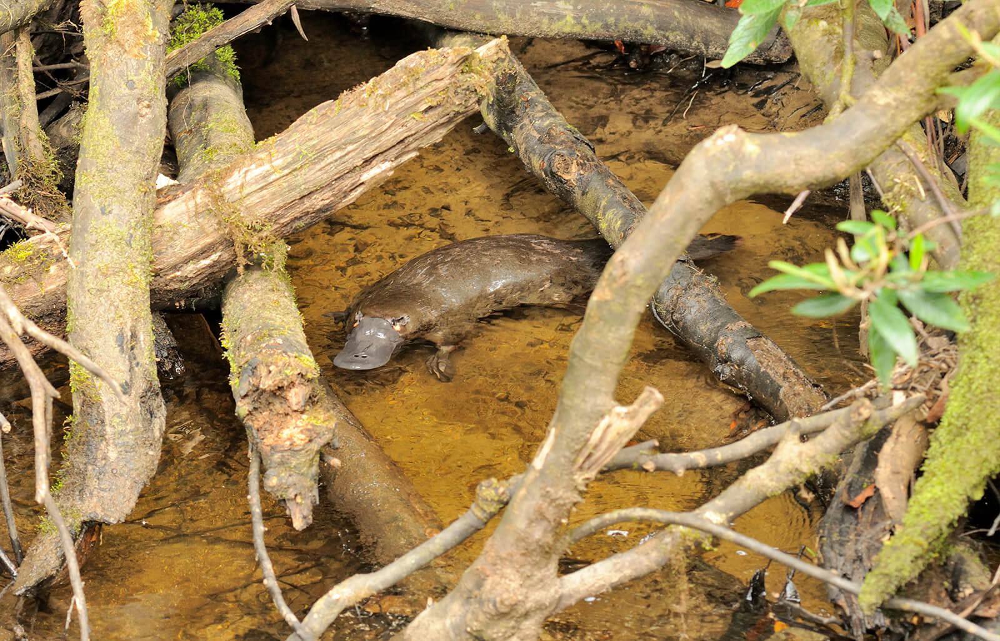

Platypuses (Scientific Name: Ornithorhynchus anatinus) are semi aquatic mammals native to Eastern Australia and Tasmania. Platypuses live on average 17 years in captivity and can weigh 2.2-5.3 lbs if they are male or 1.5-3.5 lbs if they are female. A group of platypuses are called a paddle. Baby platypuses are called platypups or puggles.
Platypuses are classified into:
Kingdom: Animalia
Phylum: Chordata
Class: Mammalia
Order: Monotremata
Family: Ornithorhynchiade
Genus: Ornithorhynchus
Species: Ornithorhynchus anatinus
Photo by Earth Reminder
Platypuses live in rivers and creeks in Eastern Australia. Platypuses are unique and native to Australia. Only two platypuses live outside of Australia and they reside in the San Diego Zoo.
Photo by Wikipedia
Red area is where platypuses are native. Yellow area is where they are introduced.
Platypuses feed on a number of small animals like shrimp, insect larvae, water bugs, etc. Platypuses use their bills to hunt by sensing the electric currents produced by its prey.
The platypuses' habits (staying underwater or in their burrows most of the time) makes finding its predators difficult but, eagles, carpet pythons, and crocodiles may eat these creatures if anecdotes are to be believed.
Only two platypuses live outside of Australia and they reside in the San Diego Zoo in California.
Photo by San Diego Zoo
Fun Facts About Platypuses are:
-Platypuses are biofluorescent, their fur is a blue-green color under a black light.
-Platypuses have spurs on their back ankles that males can use to inject venom. This venom can kill small animals and cause immense pain and swelling in humans (while not being fatal).
-When hunting, platypuses close their ears, noses, and eyes.